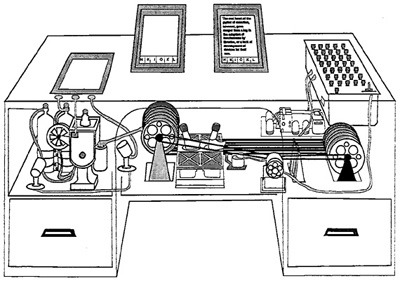

As incredible as it may seem, the web is a relatively recent development in the life of computing. Up until the early 1990's, very few people would foresee the amazing explosion that computing experienced with the development of the web, the online libraries, e-Commerce, the dot-com boom (and plop). Computers used to be isolated, and email was the most common way to communicate with others. We will examine here briefly how all this changed.
Hypertext refers to the familiar action of clicking on a word (or chunk of text) to take you to another page. As a term, it was coined by Ted Nelson in Literary Machines in 1965:
By hypertext I mean non-sequential writing — text that branches and allows choice to the reader, best read at an interactive screen. As popularly conceived, this is a series of text chunks connected by links which offer the reader different pathways.
Note the comment on interactive screens. In 1965 most computers did not have a monitor as we know it today. People were communicating with computers through paper-based, typewriter-like devices on which both the human and the computer would write (when they weren't using punched cards). In fact, the mouse had not been invented yet. It was invented a couple years later by Doug Engelbart who also gave a demonstration of one of the first hypertext system, NLS. NLS (for oN-Line System, though it was not what we call today “on-line” — there was no “line” to start with) contained 100,000 papers and cross references.
The idea of hypertext, however, is much older than the term. In his seminal article entitled "As we may think", published in the July, 1945, issue of the Atlantic Monthly, Vanevar Bush, the science advisor to President Roosevelt descibes a system for "Memory Extension". Take a look at the way he describes memex, a deceptively desk-looking piece of furniture:
Consider a future device for individual use, which is a sort of mechanized private file and library. It needs a name, and to coin one at random, "memex" will do. A memex is a device in which an individual stores all his books, records, and communications, and which is mechanized so that it may be consulted with exceeding speed and flexibility. It is an enlarged intimate supplement to his memory.
It consists of a desk, and while it can presumably be operated from a distance, it is primarily the piece of furniture at which he works. On the top are slanting translucent screens, on which material can be projected for convenient reading. There is a keyboard, and sets of buttons and levers. Otherwise it looks like an ordinary desk.

Memex was never built, but the ideas introduced by Bush were remembered, or re-invented, a couple dozen years later. And in 1978, extending the idea of hypertext, the first hypermedia document was created. The Aspen Movie Map allowed the viewer to visit Aspen, Colorado, by turning any town corner they wanted independently of the sequence of filming. Memex was supposed to be customized and would help the user in 'his library':
Any given book of his library can thus be called up and consulted with far greater facility than if it were taken from a shelf. As he has several projection positions, he can leave one item in position while he calls up another. He can add marginal notes and comments, taking advantage of one possible type of dry photography, and it could even be arranged so that he can do this by a stylus scheme, such as is now employed in the telautograph seen in railroad waiting rooms, just as though he had the physical page before him.
Note that Bush is trying to descibe his invention in terms of the technology of the time, microfiche and dry photograhy. And he is probably overly optimistic of this technology, too:
All this is conventional, except for the projection forward of present-day mechanisms and gadgetry. It affords an immediate step, however, to associative indexing, the basic idea of which is a provision whereby any item may be caused at will to select immediately and automatically another. This is the essential feature of the memex. The process of tying two items together is the important thing.
Associative indexing... What is he talking about? Do you
recognize the concept of hyperlink behind the term he invents? Further
down he introduces the concept of a search engine, and describes it with
an example:
The owner of the memex, let us say, is interested in the origin and properties of the bow and arrow. Specifically he is studying why the short Turkish bow was apparently superior to the English long bow in the skirmishes of the Crusades. He has dozens of possibly pertinent books and articles in his memex. First he runs through an encyclopedia, finds an interesting but sketchy article, leaves it projected. Next, in a history, he finds another pertinent item, and ties the two together. Thus he goes, building a trail of many items. Occasionally he inserts a comment of his own, either linking it into the main trail or joining it by a side trail to a particular item. When it becomes evident that the elastic properties of available materials had a great deal to do with the bow, he branches off on a side trail which takes him through textbooks on elasticity and tables of physical constants. He inserts a page of longhand analysis of his own. Thus he builds a trail of his interest through the maze of materials available to him.
Why does he come up with the idea of associative indexing? The inspiration comes from the troubles that people always had with indexing:
Our ineptitude in getting at the record is largely caused by the artificiality of systems of indexing. When data of any sort are placed in storage, they are filed alphabetically or numerically, and information is found (when it is) by tracing it down from subclass to subclass. It can be in only one place, unless duplicates are used; one has to have rules as to which path will locate it, and the rules are cumbersome. Having found one item, moreover, one has to emerge from the system and re-enter on a new path.
The human mind does not work that way. It operates by association. With one item in its grasp, it snaps instantly to the next that is suggested by the association of thoughts, in accordance with some intricate web of trails carried by the cells of the brain. It has other characteristics, of course; trails that are not frequently followed are prone to fade, items are not fully permanent, memory is transitory. Yet the speed of action, the intricacy of trails, the detail of mental pictures, is awe-inspiring beyond all else in nature.
Man cannot hope fully to duplicate this mental process artificially, but he certainly ought to be able to learn from it. In minor ways he may even improve, for his records have relative permanency. The first idea, however, to be drawn from the analogy concerns selection [He means selecting relevant items among many]. Selection by association, rather than by indexing, may yet be mechanized. One cannot hope thus to equal the speed and flexibility with which the mind follows an associative trail, but it should be possible to beat the mind decisively in regard to the permanence and clarity of the items resurrected from storage.
The late '60s and early '70s saw an amazing amount of innovation in Computer Science. The first hypertext system was implemented in 1967 (at Brown University by Andy van Dam), the mouse was invented the next year (at Stanford by Doug Engelbart) enabling the development of WYSIWYG applications, the windows GUI environment was implemented in 1972 (on XEROX's Alto computer by Alan Kay), the internet was born (around 1972), and protocols of allowing computers to exchange information (the TCP/IP protocol in 1978) were also developed. Even the idea of linking all documents on earth was under way, due to Ted Nelson's XANADU project.
All the components of the web were in place by the late 1970's. The only thing one would have to do is put these pieces together and allow users to create their own documents and link them on the internet. Yet, it would take more than 10 years for the web to be born. Why might that have been the case?
Tim Berners-Lee, programmer at CERN (Centre European pour la Recherche Nucleaire -or- European Laboratory for Particle Physics) was trying to help physicists exchange their papers and was frustrated by the cumbersome process it involved. It was possible for a physicist to post and retrieve papers from a few servers, but it would take a couple of minutes and a few unreadable lines of code to do that. Geeks were happy (even proud) with this process, but the CERN scientists were not.
After an initial attempt at the problem, when he developed the 'Enquire' system, he submitted a proposal to CERN entitled simply Information Management: A Proposal . In this, he describes "a simple scheme to incorporate several different servers of machine-stored information already available at CERN." It has been reported that the proposal's main objectives were:
The first three provisions resulted in the development of the first hypertext protocol, HTTP, which appears on the top of your browser. The first browser, Mosaic, was released in 1990 and the WWW was born.
Note that in Tim Berners-Lee's vision, the system is not controlled by a superior entity, it is extendible, and free. All of these reasons made it quickly acceptable and successful. There are many interesting lessons to be learned by the history of the development of the web. Note that Berners-Lee did not made huge amounts of money out of his contribution, though many made out of his.
For more information on the web, you may want to take a look at the A Little History of the World Wide Web: From 1960s to 1995 that resides are CERN.
The term Web 2.0 was invented in 2004 by O'Reilly media (a technical publishing company) and CMP media (a multi-media company) at a "brainstorming session". Since then, O'Reilly media has organized a series of conferences about Web 2.0 and the term is becoming widely adopted.
In 2005 Tim O'Reilly published a paper which defines Web 2.0. Web 2.0 is not a new version of the web. The term generally refers to using the web as a "platform" and encompasses services that enable communities, collaboration and sharing among users. For instance, O'Reilly cites Google, Napster, Wikipedia, blogging and social networking sites as examples of Web 2.0 features.
Many people have questioned whether the term is actually meaningful because many of the features of Web 2.0 have been present since the origin of the World Wide Web.
Check out this clever video describing Web 2.0.